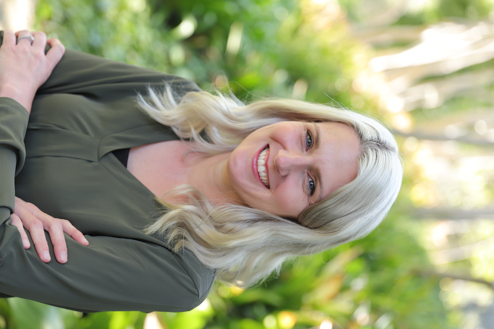

Jessica Jaynes, Ph.D.
Professor of Statistics
Director, Titan Supercomputing Center
Connecting people, disciplines, and ideas.
Advancing data science education, interdisciplinary research, and workforce development through collaboration and innovation.
Email · LinkedIn · Google Scholar · CV

Hello, I’m Jessica!
I am a Professor of Statistics and Director of the Titan Supercomputing Center at California State University, Fullerton. As a first-generation college graduate and proud CSUF alumna, I earned my Ph.D. in Statistics from UCLA.
My work focuses on building programs and partnerships that expand access to data science education, strengthen interdisciplinary research, and connect academic learning with real-world opportunities.
I am particularly passionate about bringing together students, faculty, academic institutions, and industry partners to create innovative educational pathways, meaningful research experiences, and opportunities for student success.
With a background in statistical methodology and experimental design, I bring a collaborative, interdisciplinary perspective to educational innovation and workforce development.
Leadership & Initiatives
Data Science Education
Advancing curricular innovation, faculty development, and interdisciplinary data science education across institutions.
Selected Initiatives
Project PIPE-LINE
Programs for Institutional Pathway Engagement – acceLerating INfrastructure and Education
Data Science Minor
Interdisciplinary undergraduate data science education at CSUF
DSC Conference
Data Science in the Classroom Conference
Interdisciplinary Research
Building collaborative research communities and expanding access to advanced computing, computational skills, and research opportunities.
Selected Initiatives
Titan Supercomputing Center
Community, Research, Education, Workforce (CREW)
NSF ExpandAI
CAP: INSPIRE – Inclusive Strategies for Promoting AI Research and Education, Empowering Underrepresented Students and Faculty
Workforce & Student Pathways
Connecting students with authentic research experiences, industry partners, and career-relevant learning opportunities.
Selected Initiatives
NIH Project EAGER
Enabling Access to Genomics Experience and Research
NSF SoCal Data Science
Data Science Training and Practices: Preparing a Diverse Workforce via Academic and Industrial Partnership
Selected Highlights
AI Literacy & Faculty Development
Google.org Supports AI Literacy Training
Expanding AI literacy through educator preparation and faculty professional development.
Interdisciplinary Data Science
Data Science Minor Launches at CSUF
Creating interdisciplinary educational pathways that prepare students for a data-driven world.
Let’s Connect
I enjoy collaborating with educators, researchers, and industry partners interested in educational innovation, interdisciplinary research, and workforce development.
Whether you’re interested in developing educational programs, exploring research partnerships, or creating new opportunities for students, I’d love to connect.